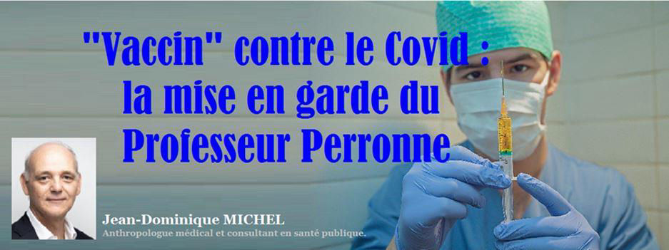
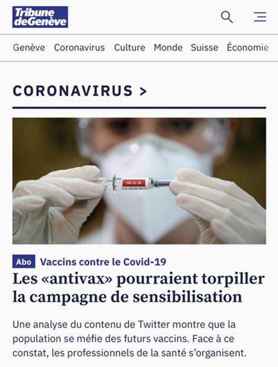

« Vaccin » contre le Covid : la mise en garde du Professeur Perronne
par Jean Dominique MICHEL

L'agenda mercantile avance à marche forcée : quelques mois seulement après l'apparition « officielle » du Sars-CoV-2 (on en repère désormais des traces dès l'été 2019... fort loin de la Chine ! 1), voici que les pharmas, à grand coups d'effets d'annonce et sous les acclamations diligentes de la presse qui semble avoir définitivement avoir perdu tout recul, prétendent nous vacciner à tour de bras dans les semaines et les mois à venir.
Euuuuhhh...
Ceci pose tout de même un certain nombre de problèmes.
D'abord parce qu'il ne s'agit en réalité non pas d'un vaccin mais d'une thérapie génique encore jamais expérimentée sur l'être humain. Qui aurait requis de cinq à dix ans pour être développée d'une manière qui respecte les protocoles de sécurité normaux. Et dont on ne comprend pas l'urgence au regard du taux de létalité du nouveau coronavirus, équivalent bel et bien à celui d'une grippe moyenne !
Tout ceci, Didier Pittet l'avait écarté d'un revers de main au cours d'un débat radiophonique dans le cadre de l'émission Forum2 de la RSR cet été, rétorquant à un jeune contradicteur qui venait d'énoncer ces faits : « ah oui, ça on connaît c'est le discours des Antivaxx. » Ajoutant avec le paternalisme le plus éculé : « J'espère au moins que vos parents se feront vacciner, eux ! »
C'est toute la difficulté avec la suppression du débat d'idées et donc de la complexité sur des sujets comme celui-là : s'il n'y a plus que les gens raisonnables (évidemment pro-vaccins) d'un côté et les irrationnels et dangereux antivaxx de l'autre, nous sommes bel et bien dans un délire religieux et dans plus rien qui ait quoi que ce soit à voir avec la science ni même la pensée.
Le fait est que pour les vaccins, comme pour toute mesure sanitaire, la question qui se pose est celle de l'opportunité ou de l'indication en fonction d'une pesée d'intérêts entre bénéfices et risques. Avec les postures religieuses actuelles face au vaccin, au port du masque ou au confinement, nous n'avons simplement plus cette liberté de la pensée et du débat, d'une manière qui non seulement nous fait violence mais multiplie gravement les risques.
Le fait est que cette nouvelle technologie apparaît aussi casse-gueule qu'il est possible. Parce qu'il absolument impossible de prédire son impact réel sur la santé de celles et ceux qui recevront le vaccin. Comme l'a magistralement résumé la généticienne Alexandra Henrion-Caude chez Morandini 3, dès lors que la pharmacodynamique, la pharmacocinétique et la génétique (avec analyse spécifiées) n'ont pas été évaluées dans les études, on est dans une absence totale de sécurité -ou pour parler français un risque majeur.
Le Pr. Arnaud Fontanet, un des membres du conseil « scientifique » français (chez Bourdin) 4 a bien pataugé dans l'exposé de ce à quoi nous pouvons nous attendre pendant que le Pr. Éric Caumes, chef du service des maladies infectieuses à la Pitié-Salpêtrière (chez Pujadas), exprimait quant à lui ses vifs doutes quant à la sécurité du machin 5.
Ce qui n'empêche pas les médias romands de s'en donner à cœur joie, Le Temps (what else ?!) occultant totalement la réalité dans un article ressemblant plus à un informercial 6 qu'à un travail journalistique digne de ce nom ; et la Julie n'hésitant pas à franchir plusieurs nouvelles lignes rouges avec des articles tendancieux à l'extrême et franchement problématiques sur le plan de l'éthique comme l'illustration ci-contre en atteste hélas.
Si mes souvenirs sont exacts, la presse était censée à l'époque distinguer clairement les publi-reportages de sa production éditoriale.
Désormais, il n'y a plus de distance entre le marketing des pharmas, la propagande stigmatisant les "opposants" (soit toute pensée critique) et la production soi-disant journalistique des médias. O tempora...
Heureusement donc, de grands professionnels prennent leurs responsabilités. Même Claire-Anne Siegrist, vaccinologue peu suspecte de complaisance envers les Antivaxx, vient de dire qu'à ce stade, elle ne serait pas très chaude à l'idée de se faire vacciner contre le Covid.
Le Pr Christian Perronne est une des voix admirables de l'époque qui rappelle depuis le début de cette crise que la médecine a eu à une époque une certaine intégrité et qu'il s'agirait (peut-être) de la retrouver plutôt que d'accepter de basculer dans un monde où l'incompétence le dispute à bel et bien à l'arrogance. Ayant le plus grand respect pour cet infectiologue, professeur de médecine et grand connaisseur de la santé publique, c'est avec joie et soulagement que j'ai pris connaissance de la lettre qu'il a publié ce matin pour tenter de remettre les pendules à l'heure.
Avec son accord (dont je le remercie chaleureusement), je la reproduis ici.
Je pense que malgré la propagande et les hurlements, chacun se rend progressivement compte de la violence et de l'étendue de la magouille à laquelle nous faisons face, et qui, NON, ne nous veut pas du bien. Merci donc aux professionnels intègres de nous avertir en leur âme et conscience que tout et n'importe quoi n'est pas acceptable.
L'expérimentation à large échelle sur la population d'un remède nouveau est strictement prohibée par le droit de la santé. On le foule tellement aux pieds par les temps qui courent qu'il ne sert plus aucunement de garantie, pas plus que le droit constitutionnel d'ailleurs. Il est d'autant plus important que de grands professionnels rappellent le droit, la déontologie et ce que commande la conscience face au rouleau compresseur des intérêts mercantiles et souvent crapuleux, de la corruption systémique qui lui assure tant de débouchés en Suisse comme ailleurs et des officines de propagande marketing que sont hélas devenus tant de médias.
Merci d'autant plus au Pr Christian Perronne pour sa prise de position intègre et courageuse !
« Chers amis,
La France, qui vit un cauchemar depuis des mois, se réveille. Dans beaucoup de villes de notre beau pays, le peuple est en marche pour retrouver sa liberté, pour exiger le retour de la démocratie. En tant que médecin, spécialiste des maladies infectieuses et ayant été président de nombreuses instances ou conseils de santé publique, y compris sur les vaccins, je mesure chaque jour les incertitudes générant la peur et le désarroi croissant de nos concitoyens. Je prends le risque d’être à nouveau qualifié de « complotiste » ou mieux de « rassuriste », termes désignant ceux qui critiquent ou challengent la pensée unique. Je finis par être fier de ces appellations, mes propos exprimant la vérité n’ayant jamais changé depuis le début de l’épidémie. Je considère donc qu’il est de ma responsabilité de m’exprimer à nouveau ce jour sur l’ensemble du volet médical de la Covid-19 et en particulier sur le sujet vaccinal, désormais l’élément central et quasiment unique de la politique de santé de l’État.
Beaucoup de Français ont été hypnotisés par la politique de la peur. Depuis septembre 2020, on nous avait annoncé une deuxième vague terrible de l’épidémie, pire que la première. Le Ministre de la Santé, le Dr Olivier Véran, le Président du Conseil scientifique de l’Élysée, le Pr Jean François Delfraissy, le Directeur Général de la Santé, le Pr Jérôme Salomon, l’Institut Pasteur nous ont annoncé des chiffres catastrophiques avec une augmentation exponentielle du nombre de morts. Les hôpitaux devaient être saturés et débordés. Même le Président de la République, lors d’une allocution télévisée récente annonçant le reconfinement, nous a prédit pas moins de 400.000 morts, renchérissant sur les 200.000 morts estimés peu de temps auparavant par le Pr Arnaud Fontanet de Pasteur. Ces chiffres irréalistes n’avaient qu’un but, entretenir la peur pour nous faire rester confinés, sagement masqués. Pourtant l’usage généralisé des masques en population générale n’a aucun intérêt démontré scientifiquement pour enrayer l’épidémie de SARS-CoV-2. L’utilisation des masques devrait être ciblée pour les malades, leur entourage (surtout les personnes à risque) et les soignants au contact.
Or l’épidémie régresse et n’a entraîné aucune apocalypse. La dynamique de la courbe montrait depuis des semaines le profil d’un rebond épidémique saisonnier qui s’observe avec certains virus, une fois la vague épidémique terminée. Cela témoigne de l’adaptation du virus à l’homme et est aussi le reflet de l’immunité collective qui progresse dans la population et qui nous protège naturellement. Les souches de virus qui circulent actuellement ont perdu de leur virulence. Les autorités ne pourront pas dire que c’est grâce au confinement car la tendance à la baisse avait commencé avant même sa mise en place. La régression de l’épidémie avait même commencé, dans certaines agglomérations, avant l’instauration du couvre-feu.
Malheureusement, il y a encore des décès qui surviennent chez des personnes très âgées, des grands obèses ou des personnes souffrant d’un diabète sévère, d’hypertension artérielle grave, de maladies cardiorespiratoires ou rénales déjà invalidantes. Ces personnes à risque sont parfaitement identifiées. Les mesures sanitaires devraient donc être ciblées pour les protéger, les dépister et les traiter le plus tôt possible dès le début des symptômes par l’hydroxychloroquine et l’azithromycine dont l’efficacité et l’innocuité sont largement confirmées, si on donne le traitement précocément.
Beaucoup de décès auraient pu être évités. Or on a dissuadé les médecins généralistes et les gériatres de traiter. Dans ce contexte, continuer à persécuter nos enfants derrière des masques inutiles reste incompréhensible.
Toutes ces mesures sont faites pour que les Français réclament un vaccin. Or quel est l’intérêt d’un vaccin généralisé pour une maladie dont la mortalité est proche de 0,05 % ? Aucun. Cette vaccination de masse est inutile. De plus, les risques de la vaccination peuvent être plus importants que les bénéfices.
Le plus inquiétant est que de nombreux pays, dont la France, se disent prêts à vacciner dans les semaines qui viennent, alors que la mise au point et l’évaluation de ces produits se sont faites à la va-vite et qu’aucun résultat de l’efficacité ou de la dangerosité de ces vaccins n’a été publié à ce jour. Nous n’avons eu le droit qu’à des communiqués de presse des industriels fabricants, permettant de faire flamber leurs actions en bourse.
Le pire est que les premiers « vaccins » qu’on nous propose ne sont pas des vaccins, mais des produits de thérapie génique. On va injecter des acides nucléiques qui provoqueront la fabrication d’éléments du virus par nos propres cellules. On ne connait absolument pas les conséquences de cette injection, car c’est une première chez l’homme. Et si les cellules de certains « vaccinés » fabriquaient trop d’éléments viraux, entrainant des réactions incontrôlables dans notre corps ? Les premières thérapies géniques seront à ARN, mais il existe des projets avec l’ADN. Normalement, dans nos cellules, le message se fait de l’ADN vers l’ARN, mais l’inverse est possible dans certaines circonstances, d’autant que nos cellules humaines contiennent depuis la nuit des temps des rétrovirus dits « endogènes » intégrés dans l’ADN de nos chromosomes. Ces rétrovirus « domestiqués » qui nous habitent sont habituellement inoffensifs (contrairement au VIH, rétrovirus du sida par exemple), mais ils peuvent produire une enzyme, la transcriptase inverse, capable de transcrire à l’envers, de l’ARN vers l’ADN. Ainsi un ARN étranger à notre corps et administré par injection pourrait coder pour de l’ADN, tout aussi étranger, qui peut alors s’intégrer dans nos chromosomes. Il existe donc un risque réel de transformer nos gènes définitivement. Il y a aussi la possibilité, par la modification des acides nucléiques de nos ovules ou spermatozoïdes, de transmettre ces modifications génétiques à nos enfants. Les personnes qui font la promotion de ces thérapies géniques, faussement appelées « vaccins » sont des apprentis sorciers et prennent les Français et plus généralement les citoyens du monde, pour des cobayes. Nous ne voulons pas devenir, comme les tomates ou le maïs transgéniques des OGM (organismes génétiquement modifiés). Un responsable médical d’un des laboratoires pharmaceutiques fabricants a déclaré il y a quelques jours qu’il espérait un effet de protection individuelle, mais qu’il ne fallait pas trop espérer un impact sur la transmission du virus, donc sur la dynamique de l’épidémie. C’est bien là un aveu déguisé qu’il ne s’agit pas d’un vaccin. Un comble.
Je suis d’autant plus horrifié que j’ai toujours été en faveur des vaccins et que j’ai présidé pendant des années des instances élaborant la politique vaccinale. Aujourd’hui, il faut dire stop à ce plan extrêmement inquiétant. Louis Pasteur doit se retourner dans sa tombe.
La science, l’éthique médicale et par-dessus tout le bon sens doivent reprendre le dessus.
Christian PERRONNE - Chef du service des Maladies infectieuses et tropicales de l’Hôpital de Garches (92)
Partager cette page